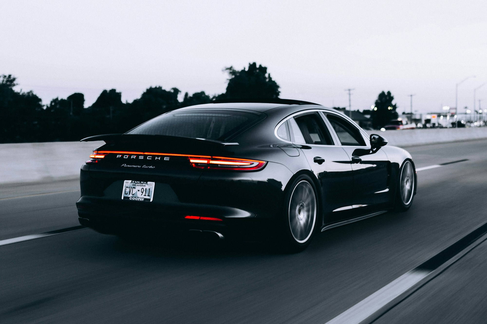
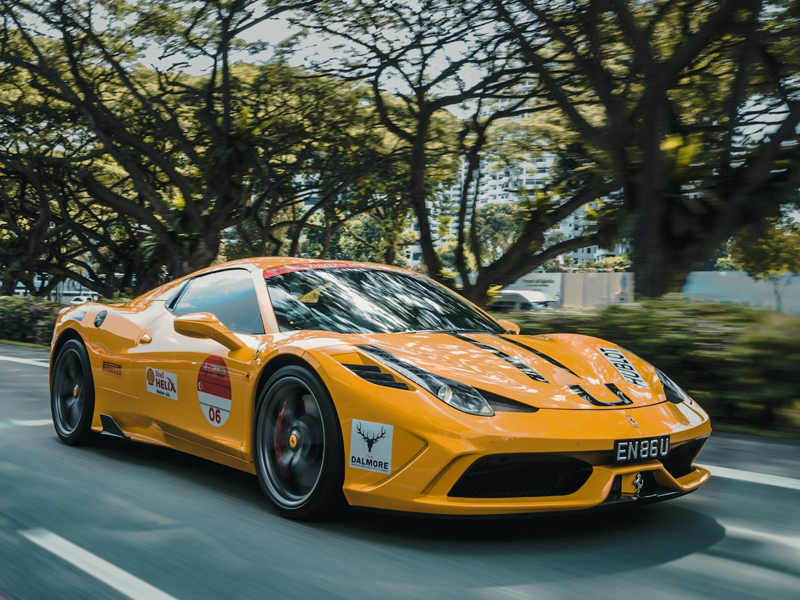

Бережно. С самого начала.
Очищаем поверхность и оцениваем её состояние до начала работ. Подготовка определяет результат.

Детейлинг, защита и уход.
Чтобы ваш автомобиль оставался
таким, каким вы его полюбили.
Красота — в отражениях. Качество — в том,
что остаётся за ними.

Не просто чистый автомобиль.
Особое отношение к нему.
Мы смотрим глубже первого впечатления: на состояние лака, фактуру кожи, труднодоступные стыки. Подбираем уход под ваш автомобиль, его историю и ваш ритм жизни.
От бережной подготовки до финального света — каждый этап нужен для результата, к которому хочется возвращаться.
Как мы работаемОт одной детали до полной трансформации.
Подберём то, что нужно именно вашему автомобилю.

Каждая поверхность
требует своего подхода.
Очищаем поверхность и оцениваем её состояние до начала работ. Подготовка определяет результат.
Выбираем профессиональные материалы с учётом покрытия, условий эксплуатации и желаемого эффекта.
Обсуждаем объём, стоимость и сроки. Работаем по записи, чтобы уделить автомобилю достаточно времени.
Проверяем поверхности при направленном свете. Перед выдачей объясняем, как сохранить эффект ухода.
Глубина цвета. Чистота линий. Игра света.
Визуальное настроение NOIR.
Редакционная фотоподборка для демо. Изображения не являются портфолио выполненных работ.
Понятный процесс. Взвешенные решения.
Внимание на каждом этапе.
Осматриваем кузов и салон, выслушиваем пожелания. Обсуждаем, что можно улучшить и какой результат реалистичен.
Составляем план ухода, определяем материалы, стоимость и время. Вы знаете, что будет сделано и зачем.
Готовим поверхности и последовательно выполняем работы. Соблюдаем технологию нанесения и выдержки составов.
Проводим финальный осмотр вместе с вами. Рассказываем об уходе и рекомендуем подходящий режим обслуживания.
Расскажите о нём — подберём уход.
Без лишних услуг. С вниманием к главному.
Демонстрационный проект. Контакты студии пока не подключены.